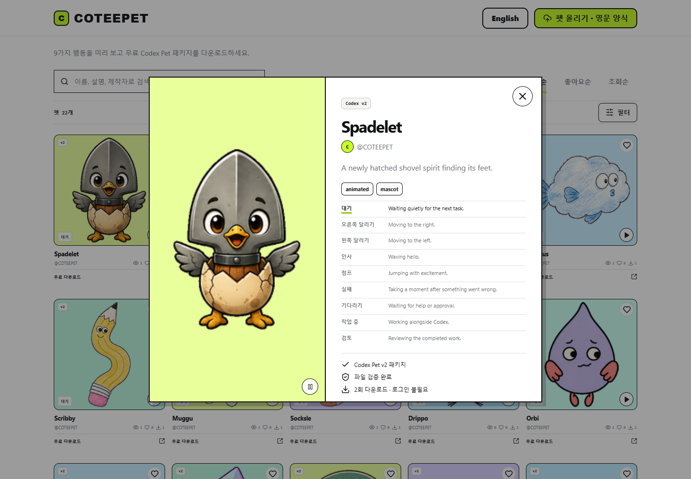

Codex Pet 캐릭터를 찾고 9가지 행동 애니메이션을 미리 볼 수 있는 웹 카탈로그입니다. 캐릭터별 버전과 패키지 정보를 확인하고 무료 다운로드로 연결합니다.
COTEEPET
개요
해결할 문제
정지 이미지나 파일 이름만으로는 캐릭터가 실제로 어떻게 움직이는지 알기 어렵습니다. 다운로드 전에 동작과 버전을 비교할 수 있는 미리보기가 필요했습니다.
구현 과정
카탈로그에서 캐릭터를 찾고 상세 미리보기에서 동작을 바꿔 보는 흐름을 구현했습니다.
- 이름·설명·제작자로 검색하고 필터로 탐색 범위 선택
- 최신순·좋아요순·조회순 정렬 제공
- 상세 화면에서 대기·달리기·인사 등 9가지 행동 미리보기
- 버전·패키지 정보를 확인하고 무료 다운로드 및 펫 등록으로 연결
화면·동작

